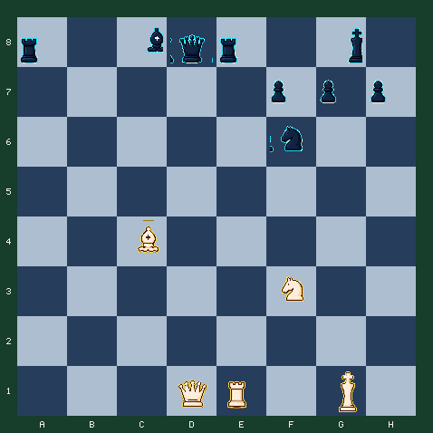

7月28日 · 早报 · 子力判断
先交换谁，最后会差一整车
连续五次选择，不急着数眼前吃掉的棋子，而是算清整个交换序列的净收益。
难度 4/5 · 预计 8 分钟 · 5 次关键选择 · 主题：交换顺序与局部子力最大化
故事引入
初学者常在看到能吃的棋子时立刻动手，高手却会先把所有回吃都放进同一条账本。第一口吃得最多，不代表最后剩得最多。
这个局面里，白方会暂时交出车和象，但每一步都带着强制威胁。你的目标不是马上将死，而是用正确顺序拆掉黑方防线，并在第五步兑现净收益。
先手就是交换中的货币
十九世纪的组合棋手很早就发现：带将军的吃子会迫使对手回应，因此可以把一次看似亏损的交换延长成完整组合。计算交换时，除了棋子分值，还要计算谁掌握下一步。
今日局面
白方走五步，用连续将军改善交换结果。

行棋方：白方 · FEN：r1bqr1k1/5ppp/5n2/8/2B5/5N2/8/3QR1K1 w - - 0 1
今日问题
走五步，算完整本地交换
每次选择后，对手会自动走最强制的回应。不要只看当前得失，要看第五步结束后的净值。
答案与逐步讲解
第 1 步：e1e8 · 对手回应 f6e8
第一步正确：Rxe8+ 先消除黑车，并迫使黑马回吃。车暂时离场，但黑马被引到了 e8。
第 2 步：c4f7 · 对手回应 g8f7
第二步正确：Bxf7+ 再用将军把黑王引离后排。现在黑王暴露，白后的线路开始出现。
第 3 步：f3g5 · 对手回应 f7g8
第三步正确：Ng5+ 继续保持先手。黑王只能退回 g8，但防守子已经失去原来的协调。
第 4 步：d1b3 · 对手回应 c8e6
第四步正确：Qb3+ 沿对角线将军，逼迫黑象去 e6 挡线。你不是追王，而是在指定黑象的位置。
第 5 步：b3e6
第五步正确：Qxe6+ 吃掉被迫挡线的象。整段交换后白方拿到黑车、兵和象，并保留主动。
完成总结
五步完成。关键不是第一步吃到多少，而是每一步都用将军维持先手，最终让黑象被迫站到可吃的位置。
常见错误
如果走 d1b3
立即 Qb3 虽然将军，但黑方的车、马和象仍然协调，挡住后不会丢掉足够子力。先用 Rxe8+ 改变防守结构。
如果走 c4f7
立即 Bxf7+ 只能引王，却没有先移除 e8 的重子。组合顺序少了一层，最终收益会下降。
复盘：把五步当成一笔交易
- Rxe8+ 先拿掉最重要的后排防守者，并诱导黑马回吃。
- Bxf7+ 和 Ng5+ 连续利用将军，不给黑方整理子力的空档。
- Qb3+ 逼黑象站到 e6，Qxe6+ 才是最终兑现。
- 局部子力最大化依靠交换顺序、先手和落点，不只是棋子标价。
带走一句：
计算交换时一直算到强制着结束，再比较最终剩余子力；不要在第一口吃子后就停止。
常见疑问
Q：为什么第一步先换车？
A：Rxe8+ 同时完成两件事：拿掉黑车，并把 f6 的马引到 e8。这样后续白后的对角线更容易制造强制变化。
Q：为什么愿意交出白象？
A：Bxf7+ 不是白送象，而是用象换兵和王的位置。黑王被引到 f7 后，Ng5+ 与 Qb3+ 才能连续获得先手。
Q：这种交换怎么记账？
A：把整个序列列成账本：不要在每一步单独下结论，而要等强制回应结束后，再比较双方剩余子力与王的安全。
想亲自走一遍这盘棋？
点击下方链接进入互动版，可以点击或拖动走棋，每一步都有即时红绿反馈和教练讲解。
棋刻 Chess Moment · 每天三分钟，想明白一步棋